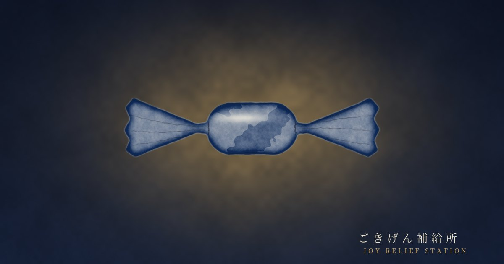

ごきげん補給所JOY RELIEF STATION
飴ちゃん ― 試作（非公開）
「風をあつめて」で見比べ。横にスクロール。画面は実際に押せます。
A
共有シートの一番上に小さなチップ。ページ本体には出ない
単独で開く ↗B
共有の隣に贈り物マークだけ。押すと吹き出し → その人向けに送る
単独で開く ↗② 届く
LINEの見え方（文面＋包み紙のカード）
こうへい
こうへいさんから、飴ちゃんひとつ。
お父さん、これ聴いたことあるはず ♪
https://tamago2022.github.io/tamago-shinchoku/lab/ame-k7q3x9/r-ai.html?g=…

ひと粒、届きましたひらくと、1曲。
③ 開ける
包みをタップ → ほどける → 一言 → ▶ → ＋の曲 → 記事 → お返し
単独で開く ↗